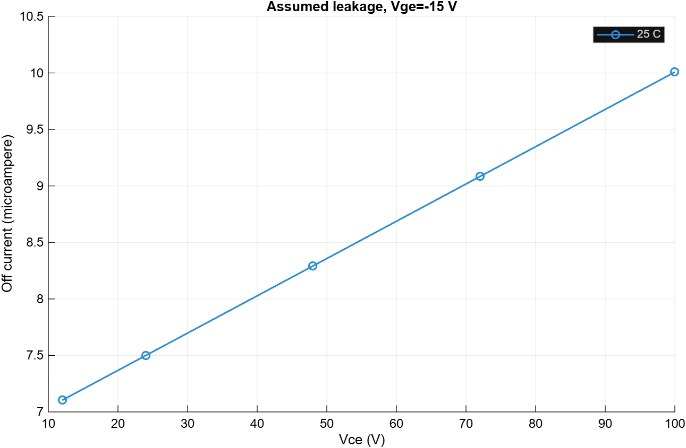
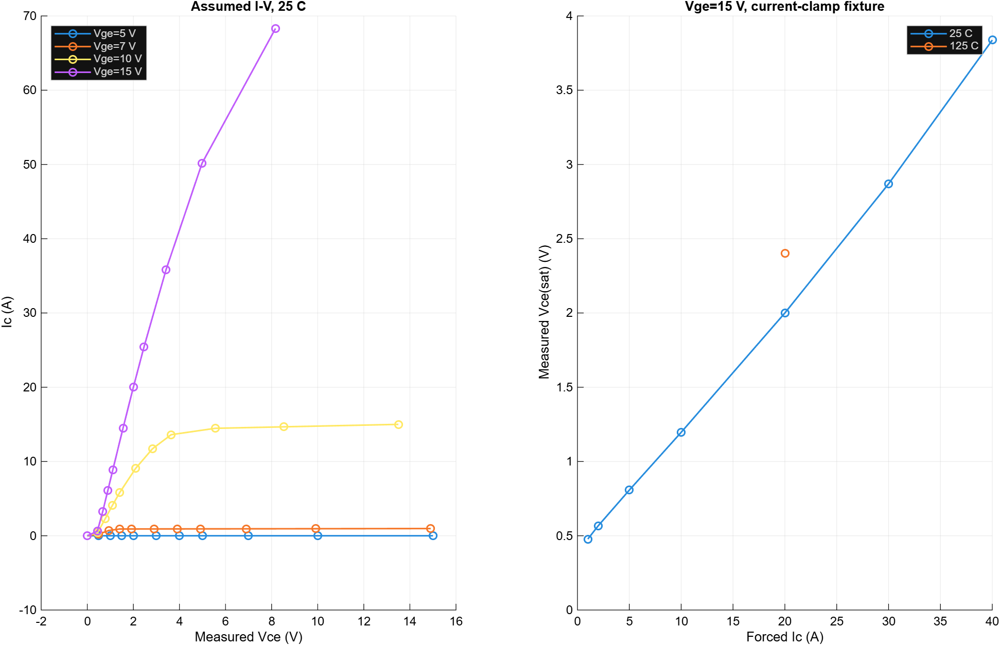

Hardware health decision: INCONCLUSIVE. No module identity, measured calibration data, safe operating area or approved acceptance limits supplied.
Numerical validation checks circuit equations, parameter recovery and/or step convergence. It does not certify a physical module. Models use explicit illustrative device and fixture parameters.
{
"status": "PARTIAL",
"hardware_decision": "INCONCLUSIVE",
"numerical_checks": "PASS for the listed completed cases",
"voltage_fixture_points25C": 54,
"current_fixture_points": 8,
"Vce20A25C_V": 2.0000652763280042,
"Vce20A125C_V": 2.4000827790393942,
"prior_raw_folder": "C:\\Users\\ganib\\OneDrive\\Документы\\Wabtec_IGBT_Test_Cell\\results\\static_20261017_165422_423",
"blocked": "Intermediate-temperature voltage fixture numerical stiffness; stopped after three approaches",
"scope": "25 C output/leakage plus current-clamp and two-temperature calibration; not a complete temperature matrix"
}{
"schema": "testcell.assumed_device.v1",
"provenance": "Illustrative engineering parameters; not a locomotive module datasheet",
"gateOn_V": 15,
"gateOff_V": -15,
"Vth_V": 6,
"VceCalibration_V": 2,
"IcCalibration_A": 20,
"leakageCalibration_A": 1E-5,
"leakageCalibrationVoltage_V": 100,
"Tcal_C": 25,
"Tsecond_C": 125,
"VceSecond_V": 2.4,
"leakageSecond_A": 0.0005,
"Cies_F": 5E-9,
"Cres_F": 3E-10,
"Coes_F": 8E-10,
"transit_s": 2E-7,
"Rc_Ohm": 0.005,
"Re_Ohm": 0.005,
"RgInternal_Ohm": 0.5,
"RgateExternal_Ohm": 4.7,
"RdriverOn_Ohm": 2,
"RdriverOff_Ohm": 2,
"driverDelay_s": 5E-8,
"bus_V": 48,
"loadR_Ohm": 2,
"loadL_H": 0.001,
"strayL_H": 1E-7,
"strayR_Ohm": 0.01,
"diodeVf_V": 0.8,
"diodeRon_Ohm": 0.01,
"diodeGoff_S": 1E-8,
"diodeC_F": 2E-10,
"dynamicStop_s": 0.0015,
"dynamicMaxStep_s": 2E-7,
"relTol": 1E-6,
"absTol": 1E-9,
"seed": 2026,
"protectionReference_s": 1E-5,
"hardwareDecision": "INCONCLUSIVE"
}
leakage.png

static_characteristics.png

Static temperature is imposed, not self-heating. The current diode has conduction and junction capacitance but no reverse-recovery charge. Event collector-terminal energy includes conduction and reactive transfer; it is not calibrated switching dissipation. No thermal coupling, fault detection or protection timing is implied by these electrical results.